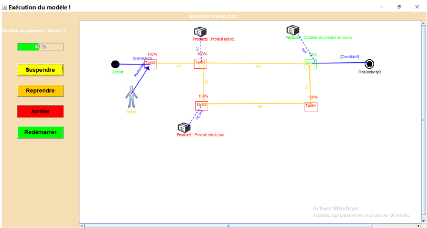

⚙️ Simulation d'exécution de modèles de procédés logiciels
Présentation
Dans le cadre de mon projet de fin d'études Master, j'ai participé à un projet qui consistait à la maintenance évolutive d'un outil de représentation graphique de modèles de procédés logiciels. L'objectif était de rajouter une couche de simulation pour permettre la visualisation dynamique du déroulement d'un projet logiciel (représenté graphiquement sur l'outil), et la prédiction de son évolution dans le temps : progression des tâches, circulation des livrables, gestion des dépendances, pour permettre l'identification anticipée des points de blocage.
La partie que je développais servirait à offrir un support décisionnel pour la gestion de projet, tout en posant les premières bases d'une automatisation future de l'exécution de ces modèles de procédés logiciels.
Objectifs
Les objectifs du développement de cet outil était de simuler de manière réaliste l'exécution d'un projet logiciel, aider à prévoir des retards potentiels, des conflits de ressources ou des dépendances critiques et ainsi faciliter la planification et la coordination des tâches. Enfin le but était de préparer le terrain pour une automatisation partielle des projets logiciels représentés par ces modèles.
Contexte
Ce travail s'inscrivait dans le cadre de mon projet de fin d'études de master en Ingénierie Logicielle, il a été proposé par le laboratoire de recherche de mon université, où des doctorants avaient déjà commencé à travailler sur un outil de représentation graphique de modèles de procédés logiciels. J'ai ensuite poursuivi le développement pour ajouter la couche de simulation. Les projets logiciels étant souvent difficiles à prédire et à planifier, la partie que je développais avait pour but d'offrir une vision plus fine et dynamique du déroulement d'un processus, au-delà des diagrammes statiques traditionnels.
Enjeux
Les enjeux du projet étaient de bien modéliser les règles d'exécution d'un procédé logiciel, notamment les tâches, leurs durées, les dépendances et les ressources. Le système devait également permettre la simulation de l'exécution de tâches en parallèle et de manière cohérente. Enfin, un autre enjeu était de fournir un support de visualisation compréhensible pour les utilisateurs et de constituer une base solide pour de futurs travaux d'automatisation.
Risques
Le principal risque dans ce projet était une mise en place difficile de la solution liée à la complexité technique, notamment le fait de devoir simuler des exécutions parallèles de tâches et de gérer des ressources partagées.
Il y avait aussi un risque lié au fait que je ne comprenne pas totalement l'outil existant sur lequel je travaillais, puisque je faisais de la maintenance sur un outil existant. Le travail en binôme représentait également un risque, notamment au niveau de la coordination et de la répartition des tâches.
Étapes du projet
Dans un premier temps, j'ai étudié les différentes notions que j'allais retrouver dans le projet, notamment les modèles de procédés logiciels ainsi que les concepts de gestion de projet tels que les tâches, les dépendances et les ressources.
Ci-dessous un exemple simplifié d'un modèle de procédé logiciel représenté avec l'outil :

J'ai ensuite analysé la structure de l'outil existant, ses fonctionnalités, et j'ai étudié plus profondément le code afin de comprendre les différents modules, les classes et l'architecture globale de l'application. Par la suite, j'ai utilisé le langage Java pour développer mon propre module. J'ai mis en place de nouvelles classes nécessaires à la partie simulation, en reprenant les classes existantes et en créant des classes "jumelles" dédiées à l'exécution (par exemple Task / exeTask, Product / exeProduct…). L'objectif de cette approche était de ne pas toucher aux modules existants afin de ne pas risquer de créer des erreurs sur les fonctionnalités de l'outil déjà en place.
J'ai également défini et mis en place différents états pour chaque élément, par exemple, une tâche peut être créée, démarrée, mise en pause, finalisée ou annulée. Un produit peut être créé, en cours d'utilisation ou disponible, et une ressource peut être disponible, occupée partiellement ou totalement saturée. Ensuite, j'ai utilisé le multithreading afin de simuler l'exécution parallèle des tâches, en m'assurant qu'à chaque évolution d'un élément, les entités liées sont mises à jour automatiquement. Par exemple, à la fin d'une tâche (définie dans le modèle avec une durée, des ressources associées et des produits utilisés), je libère automatiquement les ressources et les produits concernés.
Enfin, j'ai créé une interface graphique spécifique à la simulation avec Swing. J'y ai projeté l'évolution des tâches avec des animations afin de rendre la simulation plus lisible. En parallèle de l'avancement j'ai mis en place un système de logs enregistrés dans un fichier, ou j'enregistrais les différentes évolution des tâches, des ressources et des produits à différentes étapes du projet dont on simulait l'exécution. Par exemple, lorsqu'une ressource dépasse un certain seuil d'utilisation (au-delà de 100 %), cette information est sauvegardée dans les logs. L'utilisateur de l'outil aura ensuite accès à cette information et pourra ajuster le modèle par la suite.
Aperçu de la simulation
Ci-dessous une capture d'écran de la fenêtre d'exécution de la simulation, illustrant la visualisation dynamique de l'avancement des tâches.

Acteurs
J'ai réalisé ce projet en binôme avec une autre étudiante. Je me suis réparti les tâches avec elle afin d'avancer en parallèle de manière efficace. On faisait régulièrement des réunions afin de faire le point sur l'avancement, de vérifier ce qu'on avait réalisé et d'ajuster la répartition des tâches si nécessaire.
J'intéragissais également avec la doctorante à l'origine du projet, elle nous guidait à la fois sur les aspects techniques et sur la planification. Elle nous apportait des conseils pour orienter le développement et respecter les délais fixés.
Résultats
Pour moi
Ce projet m'a permis de consolider mes compétences en développement Java et en architecture logicielle. Il m'a également appris à travailler efficacement en binôme, à organiser un projet complexe et à tenir des échéances strictes. La soutenance m'a également permis de développer mes compétences en communication technique et vulgarisation.
Pour l'université
L'outil final constitue une base exploitable pour d'autres travaux de recherche ou projets académiques. Il permet d'illustrer de manière concrète l'exécution de modèles de procédés et d'expérimenter différents scénarios sans risque pour un projet réel.
Lendemains du projet
- Futur immédiat : L'outil peut être enrichi par une interface utilisateur plus avancée ou par l'intégration de nouvelles règles de simulation pour refléter d'autres modèles de procédés.
- À moyen terme : Il pourrait servir de socle pour développer des mécanismes d'automatisation partielle de tâches représentées dans les modèles, ou pour intégrer des algorithmes de prédiction liés au planning et à la gestion des ressources.
- Aujourd'hui : Ce projet reste une référence dans mon parcours, tant pour sa richesse technique que pour le travail collaboratif qu'il a exigé. Il représente également une base solide pour mes futures activités.
Mon regard critique
Ce projet a été particulièrement formateur car il combine des défis techniques complexes et un important travail de structuration. Ma valeur ajoutée s'est exprimée dans ma capacité à comprendre rapidement les concepts liés aux modèles de procédés, à concevoir un module de simulation cohérent et à collaborer efficacement avec mon binôme pour aboutir à un outil fonctionnel.